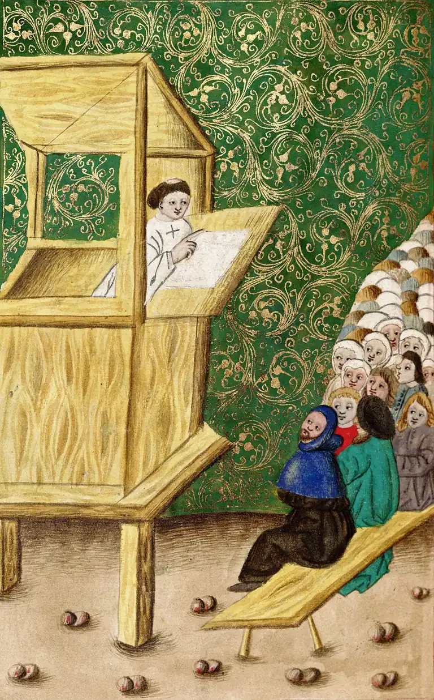
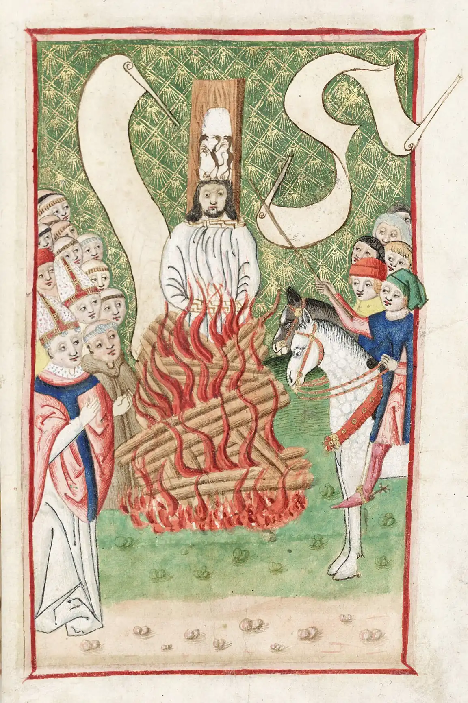
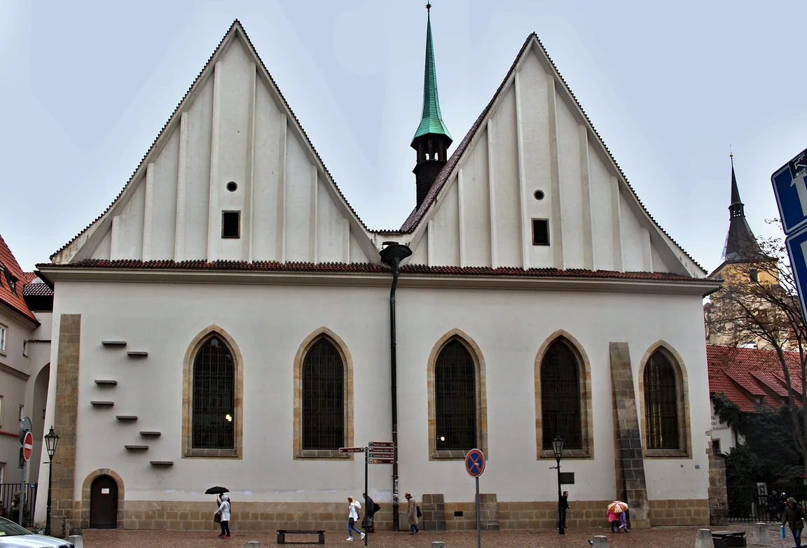
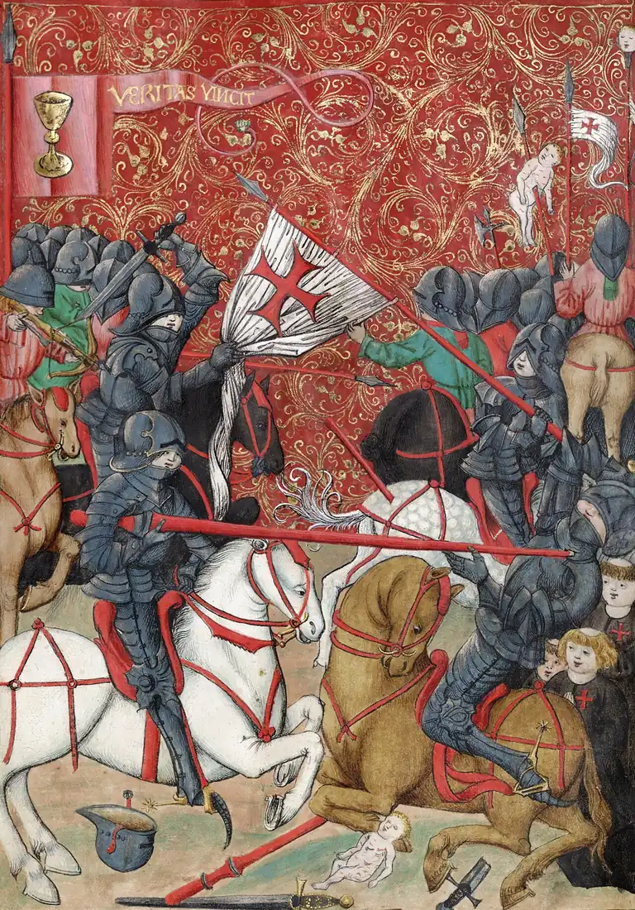
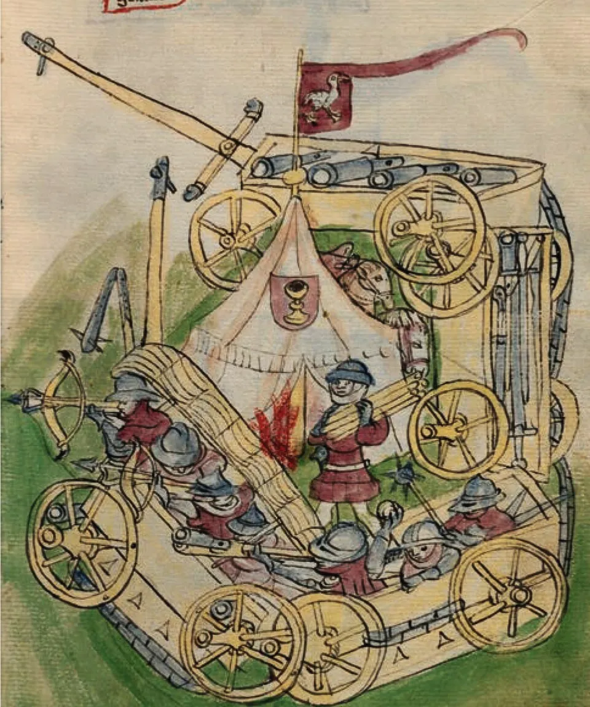

Požadavky
Čtyři artikuly pražské (1420): svobodné kázání, přijímání pod obojí (symbol kalich), chudoba církve a trestání hříchů.
Pro 7. ročník: od kázání Jana Husa po bitvu u Lipan.
Na počátku 15. století byla církev bohatá a mnoho lidí jí vyčítalo, že se kněží víc starají o majetek než o víru. Nejvíc pobuřoval prodej odpustků – za peníze se měly odpouštět tresty za hříchy. Univerzitní mistr Jan Hus to od roku 1402 kritizoval v kázáních v Betlémské kapli, česky a srozumitelně.
Hus byl pozván na koncil do Kostnice, odmítl odvolat své učení a roku 1415 byl upálen jako kacíř. Jeho smrt jeho stoupence nezastrašila, ale rozhořčila. Roku 1419 vyházeli při první pražské defenestraci konšely z oken novoměstské radnice – začala husitská revoluce.
Čtyři artikuly pražské (1420): svobodné kázání, přijímání pod obojí (symbol kalich), chudoba církve a trestání hříchů.
Proti husitům vedl Zikmund pět křížových výprav. Jan Žižka vítězil díky vozové hradbě a kázni (Vítkov 1420), po něm vedl vojska Prokop Holý.
Umírnění husité se dohodli s církví (basilejská kompaktáta potvrdila přijímání pod obojí) a roku 1434 spolu s katolickou šlechtou porazili radikály u Lipan.
Typická chyba: husité nebyli jedna skupina. Umírnění (hlavně Pražané) chtěli dohodu, radikální táboři chtěli církev a společnost změnit od základu. U Lipan proti sobě bojovali husité.
Seřaď od nejstarší: bitva u Lipan, upálení Jana Husa, první pražská defenestrace, bitva na Vítkově.
✅ upálení Husa (1415) → defenestrace (1419) → Vítkov (1420) → Lipany (1434)
Husité žádali nápravu církve a shrnuli své požadavky do čtyř artikulů pražských. Bránili se pěti křížovým výpravám; proslulí byli vozovou hradbou a bojovou kázní.
Iluminace z Jenského kodexu vznikly kolem roku 1500 a jejich malíř byl husitům nakloněn. Ukazují, jak si husitské dějiny pamatovali jejich stoupenci.




